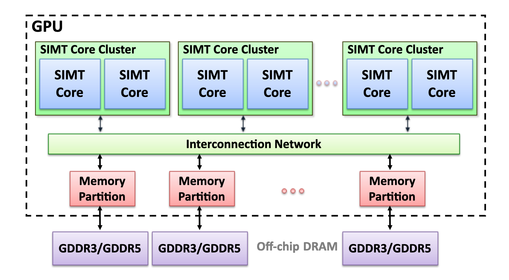
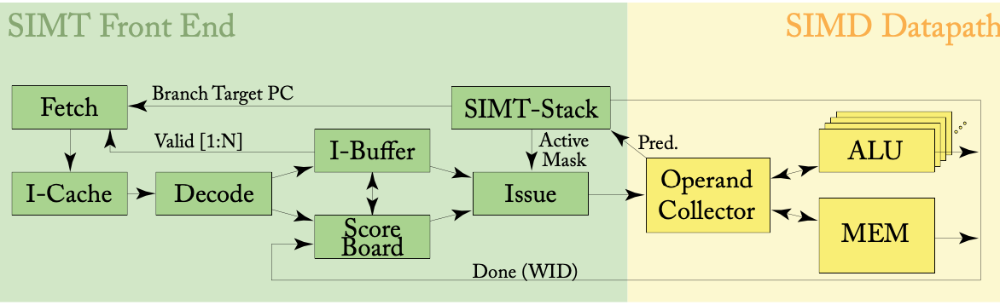
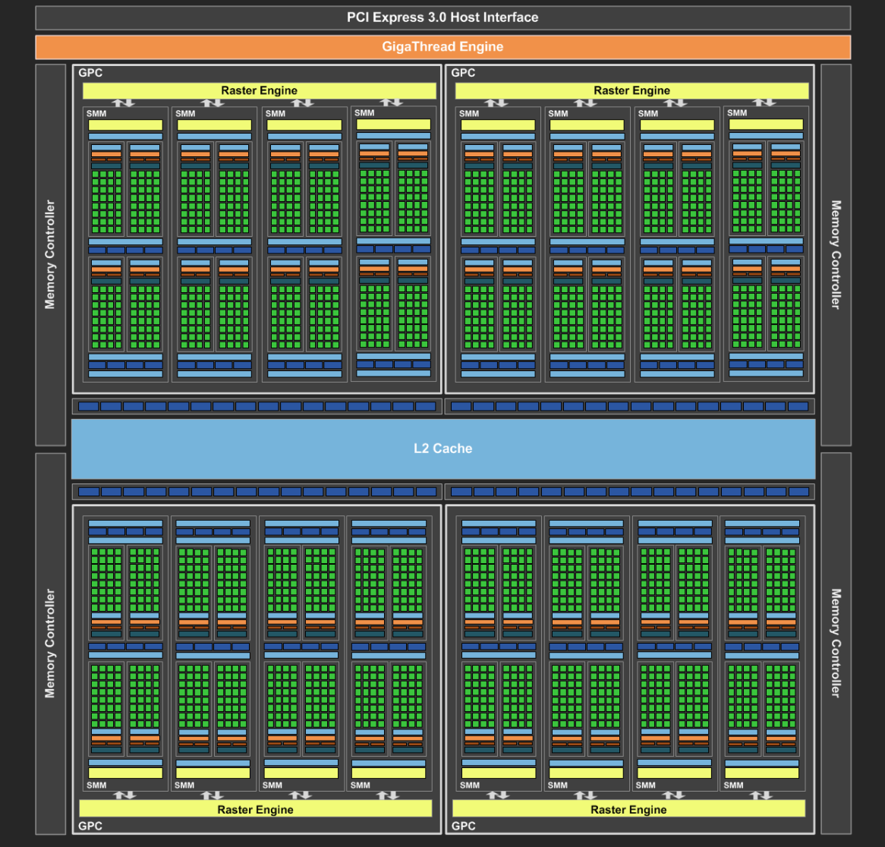
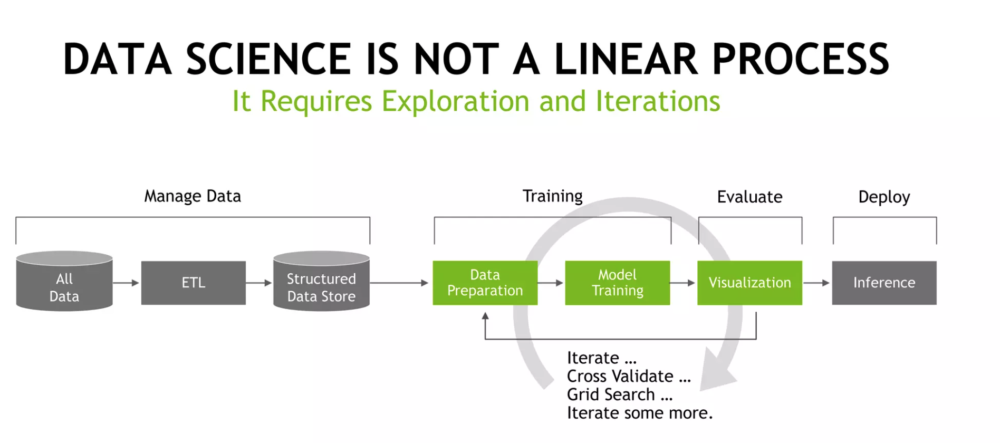
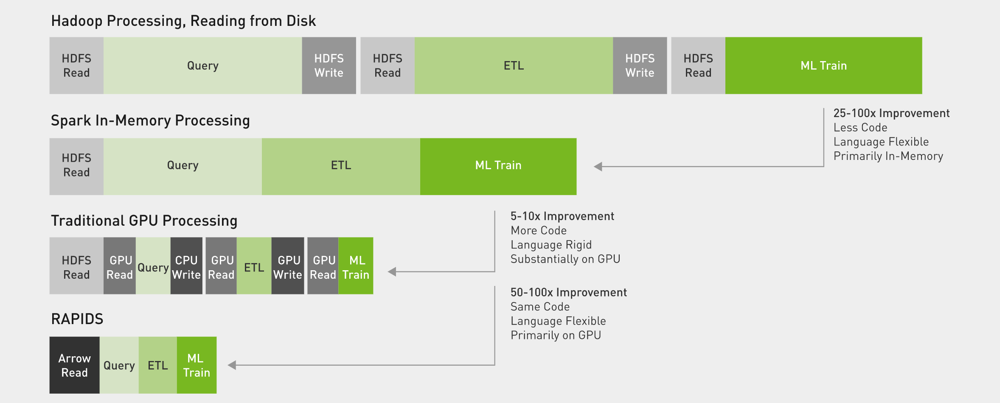

SURVEY ON GPU ACCELERATORS
HPCA ECE/CS 570
Team Members
Bharath Kumar Reddy Gangavaram (ECE)
Mahendra Kumar Kodidala (ECE)
Manikanta Ranganath (CS)
Introduction
Due to the massively parallel processing capabilities of these specialized processors, GPU accelerators have grown in popularity in recent years. Numerous computer applications, such as machine learning, deep learning, scientific simulations, data analytics, and general-purpose processing, can benefit significantly from GPU acceleration.The capacity to accelerate the processing of massive amounts of data is one of the primary reasons for utilizing GPU accelerators. This is crucial for machine learning and deep learning applications because these techniques train massive neural networks by analyzing lots of data. GPU accelerators can dramatically accelerate the learning process, enabling the creation and deployment of machine learning models more quickly.The capacity of GPU accelerators to carry out complex simulations with a high degree of accuracy and realism is another reason to use them. In order to describe complicated physical systems, scientific simulations like molecular dynamics, fluid dynamics, and computational fluid dynamics need to process a lot of data. These simulations can be considerably accelerated by GPU accelerators, allowing for quicker scientific research innovation and discovery.
Additionally, general-purpose processing and data analysis can both be accelerated by GPU accelerators. The ability to analyze data fast and effectively is vital because of the rising volume of data being produced nowadays. GPU accelerators may significantly speed up general-purpose computation and data analytics, enabling quicker insights and decision-making.Another motive is the ability to bring GPU power to the network edge, enabling low latency and high bandwidth processing. This is accomplished by using GPU accelerators in edge computing. This creates new opportunities for a variety of applications, including automated factories, smart cities, and self-driving cars.Overall, the use of GPU accelerators has the potential to significantly speed up a variety of computing tasks, allowing for the quicker and more effective processing of large amounts of data and opening up new perspectives and scientific discoveries in data analytics, general-purpose computation, and scientific research.
GPU Accelerator Background
The background section of report on GPU accelerators should provide an overview of the history, development, and current state of GPU accelerators.
The origins of GPU accelerators
The use of graphics processing units (GPUs) for general-purpose computation dates back to the early 2000s, when researchers first began to explore the idea of using the massive parallel processing capabilities of GPUs for tasks beyond computer graphics. The development of GPU accelerators: Over the years, the capabilities of GPUs have continued to evolve, with hardware manufacturers developing specialized GPU accelerators that are optimized for a wide range of computing applications.
current state of GPU accelerators
Today, GPU accelerators are widely used in a variety of fields, including machine learning, deep learning, scientific simulations, data analytics, and general-purpose computation. The use of GPU accelerators is becoming increasingly popular due to the massive parallel processing capabilities of these specialized processors
Advancement in GPU accelerators
Advancements in deep learning and AI have also led to the development of more sophisticated GPU accelerators that are specifically designed for deep learning tasks, such as NVIDIA's Tesla V100 and A100.
GPU accelerators in the current High-Performance Computing market
GPU accelerators have become an integral part of High-Performance Computing market, and are being used to accelerate a wide range of applications, including simulations, data analytics, and machine learning.
GPU accelerators in Edge computing
With the increasing amount of data being generated, the ability to process this data quickly and efficiently is becoming increasingly important. GPU accelerators can provide significant speed-ups for data analytics and general-purpose computation, allowing for faster insights and decision making. With the advent of edge computing, the use of GPU accelerators in edge devices is becoming increasingly popular.
Literature Review
3.1 Accelerating High Performance Computing Applications Using GPUs
Due to their programmable data parallel computing architectural technology, GPUs are incredibly effective computational devices, and their speed and performance can be quicker than CPUs. In the past, GPUs were only used for graphics processing; however, they are now increasingly frequently employed in non-graphic applications, such as High performance computing applications. AMD’s FireStream 9370 GPU and NVIDIA Tesla M2090 GPU are the latest GPUs associated with high performance computing. High-performance floating-point performance is provided by AMD FireStream GPUs across a variety of computer workloads. The demanding performance and reliability standards of High-performance computing clusters, which grow up to thousands of nodes, are addressed in their design. The NVIDIA Tesla M-class GPUs were created with parallezation in mind. They are built on CUDA technology, often known as Fermi.The Fermi architecture is implemented with three billion transistors and up to 512 CUDA cores. The CUDA core is a hardware and software architecture that includes an FP unit and an entirely pipelined integer arithmetic logic unit. NVIDIA GPUs can run programs written in C, C++, Fortran, OpenCL, DirectCompute
3.2 GPU Resource Sharing and Virtualization on High Performance Computing Systems
Desktop virtualization is a popular technology that enables users to access their desktops from any location, regardless of the physical location of the desktop hardware. However, the performance of desktop virtualization can be limited due to the lack of dedicated hardware resources, such as graphics processing units (GPUs), which are essential for running graphics-intensive applications. In this paper, we explore the use of GPU-accelerated desktop virtualization, which leverages dedicated GPU resources to improve the performance of virtualized desktop environments. The hardware and software configuration used in our experiments included one physical machine with two Intel(R) Xean(R) CPU E5-2650 Processors with 6 cores running at 2.3GHz, 64GB of memory, and NVIDIA grid K2 for our GPU. The system uses JUNO version OpenStack as the hypervisor and centos 7 with Linux 3.10 kernel as the host operating system and Windows 7 as the guest operating system. The desktop transmission protocol used was SPICE. Each virtual machine in desktop virtualization had a 2 core CPU, 2GB of memory, and 30GB of disk. The host disk redundant array was RAID 5. The HD video size was 1920 *1080. Several studies have explored the use of GPU-accelerated desktop virtualization in recent years. One study by Huang et al. (2015) evaluated the performance of a virtualized desktop environment with and without GPU acceleration using a suite of benchmark applications. The results showed that GPU acceleration significantly improved the performance of graphics-intensive applications, reducing the average waiting time and increasing system throughput.
Similarly, another study by Liu et al. (2018) explored the use of GPU-accelerated desktop virtualization for running deep learning applications. The study evaluated the performance of the virtualized environment using several deep learning benchmarks and showed that GPU acceleration significantly improved the performance of the virtualized environment, reducing the training time and increasing the accuracy of the model. Another study by Yuan et al. (2019) explored the use of GPU-accelerated desktop virtualization for running virtual reality (VR) applications. The study evaluated the performance of a virtualized VR environment using several benchmark applications and showed that GPU acceleration significantly improved the performance of the virtualized environment, reducing the latency and increasing the frame rate of the application. Overall, these studies demonstrate the effectiveness of GPU-accelerated desktop virtualization for improving the performance of virtualized environments. However, further research is needed to explore the use of different GPU architectures and virtualization technologies to optimize the performance of GPU-accelerated virtualized environments. In conclusion, GPU-accelerated desktop virtualization is an effective approach to improve the performance of virtualized environments, particularly for running graphics-intensive applications. Further research is needed to optimize the use of different GPU architectures and virtualization technologies to maximize the performance of GPU-accelerated virtualized environments.
3.3 GPU acceleration for the web browser based evolutionary computing system
Grid and cloud computing have become more and more popular alternatives to very expensive supercomputers or dedicated computing clusters because of their ability to utilize heterogeneous machines with different internal architectures. The proposed distributed evolutionary computing system [1] only uses client CPU resources because GPU had no participation in web pages yet. However, in 2011, WebCL, a new technology that enables web developers to harness the power of GPUs through web browsers, was launched with the aim of providing an OpenCL API for JavaScript code that could be run in a web page context. The introduction of GPGPU programming platforms like Compute Unified Device Architecture (CUDA) or Open Computing Language has also made it feasible for GPUs to be extensively used for computing purposes. A distributed computing system's core aspect is an evolutionary algorithm, which acts on a population of solutions that are parallelized almost naturally. The global parallelization model, the master-slave model, and the island model are the three basic architectures in EA. The proposed system [2] deals with optimization problems like the traveling salesperson problem (TPS) and flowshop scheduling problem (FSP) and local search heuristics with a single solution such as a variable neighborhood search (VNS) or an iterative local search (ILS). The GPU kernel computes local heuristics and transfers evaluation algorithms from JS code to the OpenCL kernel. Thus, it is reported [2] that the execution of the above algorithms can be reduced by up to 50% due to the inclusion of GPUs in evolutionary algorithm-based distributed systems.
Methodology
Your methodology content goes here.
General Architecture of GPU
Architecture of Nvidia Geoforce GTX 980

Image source: [Aamodt el at. 2018]
The architecture of a GPU includes various components designed to enable efficient processing of computationally intensive tasks such as graphics rendering and scientific simulations. The GPU's processing power is harnessed through the use of multiple cores, which can each execute a single-instruction multiple-thread (SIMT) program. These cores are capable of running thousands of threads simultaneously and can communicate with each other through scratchpad memory and barrier operations. Additionally, each core has its own first-level instruction and data caches, which serve to reduce memory system traffic. The large number of threads running on each core helps to compensate for the latency involved in accessing memory when data is not found in the first-level caches[Aamodt el at. 2018].
In general, in a generic GPU architecture, a GPU has multiple SIMT( single instruction multiple threads) clusters, each cluster is mapped to a particular region in the memory and each cluster has numerous SMMs. some common components that are typically included: Streaming Multiprocessors (SMs): SMs are the main processing units within a GPU. Each SM typically contains multiple CUDA cores (or equivalent) that can perform calculations in parallel. The number of SMs can vary depending on the GPU model. Memory: GPUs typically have their own dedicated memory (VRAM) that is used to store data and instructions for processing. The amount of memory can vary depending on the GPU model. Memory Controller: The memory controller is responsible for managing the flow of data between the GPU's memory and the processing units. Texture Mapping Units (TMUs): TMUs are responsible for mapping textures onto 3D objects in a scene. Raster Operations Pipeline (ROP): The ROP is responsible for finalizing the rendering process by processing pixel data and generating output images. Compute Capability: Modern GPUs are capable of performing more than just graphics rendering and are often used for general-purpose computing tasks such as machine learning and scientific simulations. The computing capability of a GPU refers to its ability to perform these types of calculations. Bus Interface: The bus interface is responsible for communicating with the CPU and other components in the system, allowing data to be transferred to and from the GPU.
SIMT CORE:

image source: [Aamodt el at. 2018]
In order to optimize performance, GPUs organize threads into groups known as "warps" or "wavefronts" by NVIDIA and AMD, respectively. These warps represent the unit of scheduling, with the hardware selecting a warp for scheduling during each cycle. Using the one-loop approximation, the program counter of the selected warp is used to access instruction memory and find the next instruction to execute. Once the instruction is fetched, it is decoded and source operand registers are fetched from the register file. The SIMT execution mask values are determined in parallel with fetching source operands from the register file. Execution proceeds in a single-instruction, multiple-data manner with each thread executing on the functional unit associated with a lane provided the SIMT execution mask is set. GPUs may contain several function units, each supporting only a subset of instructions. To achieve higher performance per unit area, some GPUs execute a single warp or wavefront over several clock cycles by clocking the function units at a higher frequency [Aamodt el at. 2018].
When scheduling a large number of warps, it can be difficult to keep track of each state and requires a significant number of registers. To address this issue, the number of warps can be decreased, and the number of instructions scheduled from the same warp can be increased. A scoreboard is used to keep track of dependencies, which helps remove any potential conflicts that may arise from reading operands from the same register bank. To avoid stalls and optimize throughput, instructions may be replayed and kept in the instruction buffer until at least some part of the instruction is completed. Read barriers are also utilized to prevent hazards, and overlap between register banks can be used to avoid conflicts when reading operands from the same bank [Aamodt el at. 2018].
NVIDIA Geoforce GTX 980
Architecture of Nvidia Geoforce GTX 980

Source: NVIDIA., 2014.
The GTX 980 is based on Nvidia's Maxwell architecture, which is designed to be power-efficient while still delivering high performance. It has 2048 CUDA cores, which are used for the parallel processing of graphics and other computations. In total it has 4 memory controllers each attached to a graphic processing cluster. Each cluster has 4 SMMs, in total it has 16 SMSs. In SMMs, each SMM has its own I-buffer and warp scheduler, register file, and dispatch units. One SMM consists of 128 cores which are divided into 4 blocks. Along with this, it has a Load/Store unit and SFUs [ NVIDIA., 2014].
The GTX 980 has a base clock speed of 1126 MHz, which can be boosted to 1216 MHz under load. It also has 4 GB of GDDR5 memory with a 256-bit memory interface, providing a maximum bandwidth of 224 GB/s [ NVIDIA., 2014]. One of the key features of the Maxwell architecture is the use of dynamic parallelism, which allows the GPU to create and launch new threads on the fly, without having to return to the CPU. This allows for more efficient processing of complex tasks, such as physics simulations or artificial intelligence algorithms [ NVIDIA., 2014].
The GTX 980 also includes Nvidia's VXGI (Voxel Global Illumination) technology, which enables real-time global illumination and dynamic reflections in games. It also supports Nvidia's G-Sync technology, which synchronizes the refresh rate of the monitor with the output of the GPU, eliminating screen tearing and reducing input lag [ NVIDIA., 2014]. In terms of power consumption, the GTX 980 has a TDP (thermal design power) of 165 watts, which is relatively low compared to previous high-end graphics cards. This is partly due to the use of Nvidia's "MFAA" (Multi-Frame Anti-Aliasing) technology, which provides improved image quality with less processing power than traditional anti-aliasing techniques [ NVIDIA., 2014].
Case study : Apache Spark 3.0

Source : NVIDIA., 2023.
Apache Spark is an open-source distributed computing system that enables the processing of large-scale data sets. With the introduction of Spark 3.0, the system now supports GPU acceleration, which significantly boosts the performance of machine learning tasks. Spark's new GPU support leverages the power of GPUs to speed up the training and inference of machine learning models. GPUs excel at performing matrix operations, which are critical for many machine-learning algorithms[ NVIDIA., 2023].
To provide GPU support, Spark 3.0 includes the CUDA-based Spark Accelerator for Apache Arrow or cuDF. cuDF is a GPU DataFrame library that provides a Pandas-like API for working with data on the GPU. It enables data scientists and engineers to take advantage of the parallel processing capabilities of the GPU to speed up data manipulation and preprocessing tasks, such as joining, filtering, and aggregating. In addition to cuDF, Spark 3.0 also includes GPU-accelerated MLlib algorithms for common machine learning tasks, such as linear regression, logistic regression, and k-means clustering [ NVIDIA., 2023].
A typical data science problem follows these steps in its data pipeline path. Collecting the data, extracting the data, and loading the data into the database. Storing the data in the structured data store. Then it follows these steps in data training, data preparation, model training, and evaluating the model and inference from the data. Between each step, there is a time delay because this pipeline is divided into multiple stages and it has very high latency due to stalls between each step [ NVIDIA., 2023].
To eliminate these stalls, in apache spark 3.0, all the steps in the data pipeline are integrated into a single data pipeline. From collecting data to deploying data can be automated in a single pipeline which reduces latencies [ NVIDIA., 2023]. The main advantage of apache spark 3.0 is it has added support for GPU acceleration through RAPIDS, a bundle of open-source software libraries developed by NVIDIA to enable GPU acceleration for data processing and machine learning workloads. With RAPIDS, Spark can take advantage of GPUs to accelerate data processing and machine learning tasks. This is achieved by offloading compute-intensive tasks to the GPU, which can perform computations in parallel, leading to significant performance gains [ NVIDIA., 2023]. RAPIDS integrates with Spark through the use of Spark plugins, which enable users to take advantage of GPU acceleration without modifying their Spark code. With the RAPIDS plugin, Spark can leverage the power of GPUs to accelerate data processing and machine learning workloads, including ETL, SQL queries, and machine learning algorithms. One of the key benefits of using RAPIDS with Spark is the ability to process large volumes of data much faster than traditional CPU-based systems. This is particularly important for use cases that require processing large amounts of data in near real-time, such as fraud detection, recommendation engines, and financial analytics [ NVIDIA., 2023]. Through rapids, it is possible to achieve 50 to 100 times faster speed when compared to a data pipeline that involves HDFS read and disk operations. And with a normal spark in-memory data pipeline it is possible to achieve 25 to 100 times faster speed for the same pipeline [ NVIDIA., 2023].

Source : NVIDIA., 2023.
Through rapids, it is possible to achieve 50 to 100 times faster speed when compared to a data pipeline that involves HDFS read and disk operations. And with a normal spark in-memory data pipeline it is possible to achieve 25 to 100 times faster speed for the same pipeline [ NVIDIA., 2023].
References
Rogers, Aamodt., W. W. L., && T. M., Fung, T. G. (2018). General-Purpose Graphics Processor Architectures. Book.
NVIDIA Corporation. (2014). NVIDIA Maxwell GM204 Architecture Whitepaper.Microway, Inc.https://www.microway.com/download/whitepaper/NVIDIA_Maxwell_GM204_Architecture_Whitepaper.pdf
NVIDIA. (2023). NVIDIA Apache Spark™ 3.0.0 GPU Acceleration for Data Science. NVIDIA. https://www.nvidia.com/en-us/deep-learning-ai/solutions/data-science/apache-spark-3/
[4] Hao Li, Roger Grosse, "Accelerating Deep Neural Networks on GPUs".
[5] Li Du,Yuan Du, "Hardware Accelerator Design for Machine Learning".
[6] Teng Li, Vikram K. Narayana, Esam El-Araby, Tarek El-Ghazawi, “GPU Resource Sharing and Virtualization on High Performance Computing Systems”, International Conference on Parallel Processing, 2011.
[7] Yaser Jararweh, Shadi AlZubi, Salim Hariri, “An Optimal Multi-Processor Allocation Algorithm for High Performance GPU Accelerators”, IEEE Jordan Conference on Applied Electrical Engineering and Computing Technologies,2011.
[8] Bin Liu, Dawid Zydek, Henry Selvaraj, Laxmi Gewali, “Accelerating High Performance Computing Applications Using CPUs, GPUs, Hybrid CPU/GPU, and FPGAs”, 13th International Conference on Parallel and Distributed Computing, Applications and Technologies, 2012.
[9] Tergel Molom-Ochir, Rohan Shenoy, “Energy and Cost Considerations for GPU Accelerated AI Inference Workloads”, IEEE Jordan Conference on Applied Electrical Engineering and Computing Technologies, 2011.